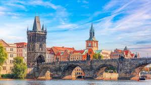
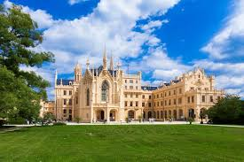

Emblematic places of Czech Republic |
Index |
Culture |
Emblematic places |
Gastronomy |
Economy |
Forms |
| Emblematic places in former Czechoslovakia, now primarily located in the Czech Republic and Slovakia, represent a mix of medieval history, communist-era, and gothic architecture. |
| Prague Castle and St. Vitus Cathedral: The largest ancient castle complex in the world and the spiritual symbol of the Czech state. |
 |
|  | Charles Bridge: A historic stone gothic bridge connecting the Old Town with Malá Strana, lined with statues. |
| Lednice-Valtice Complex: A vast landscape in South Moravia featuring a Neo-Gothic chateau, often called the "Garden of Europe". |  |